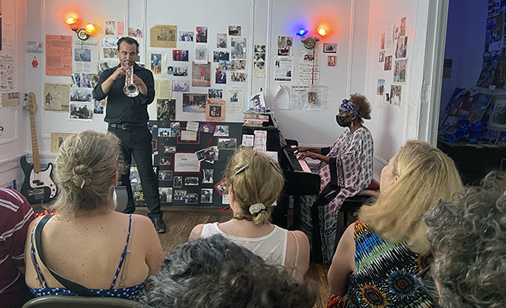

An 88 year old pianist, playwright, vocalist and actress has been opening her house in Harlem for free jazz sessions every Sunday for 33 years.
When it all started, in August 1993, it was a coping mechanism for Marjorie Eliot, the Georgia born musician, playwriter, wife and mother of four. Sundays had been especially hard for the past year. Her son Philip had passed away on August 23rd, 1992 due to kidney complications. It was a Sunday. He was only 32.
One year later, Marjorie put together a music concert to mark her son's passing at a museum nearby. Having people around to share some music helped. So she decided to do it again, this time in the living room of her apartment.
That's how Parlor Entertainment came to life.
On concert days, tourists and locals alike flock the address, call the 107 buzzer and stride through the majestic entrance hall of the 1916 building.
Marjorie lives on the third floor, which she fills with music just like it used to be during the Harlem Renaissance.
The door remains open and she doesn't charge anyone to step inside. Once you do, you become part of her family.
Although tickets are free, she pays the musicians and offers beverages and snacks to the audience, paying for them with money from donations and her own pocket.
"I would not let them not be paid", she says. A show is a show, and this one, as homey as it may be, is no different than Carnegie Hall. The suggested donation is 10 dollars per person, and a bucket is usually passed around the room during the concert. She also takes Venmo and Zelle payments, and the Jazz Foundation has set up a page for tax-deductable contributions.
Still, she says she needs to be "smart" with her spendings, making sure donations are invested in the next concert.
Not a lot has changed since she started with the concerts. As the years wore on, she replaced the full cooked meal she prepared herself with snacks for the audience, and some new musicians joined as regulars on Sundays.
One of them is Nick Mauro, a trumpeter and music teacher who met Marjorie around ten years ago, when she went to speak to his class of students. The two have played together so many times he's able to detected on the first notes which song she's playing next, so he can tag along.

For Marjorie, producing the concert isn't any different than writing and putting on plays when she was a child back in Georgia, getting her friends to play the parts she wrote. "I would get the older girls and they would recruit the boys. I would produce, have food for them", she tells me after one of her concerts. It's just the two of us now, surrounded by the memories taped to the white walls.
Clippings of old newspapers tell her story in English and French next to drawings made by children, plaques from awards she has received along her career, a list of the plays she's written and dozens of pictures of her sons and family friends.
They tell the story of a long life dedicated to the arts and her community:
1930
1937 - Marjorie Eliot is born in Georgia on April 18th
1940
1940 - First piano lessons
1950
1953 - After finishing school in Philadelphia, she moves to New York City
1959 - Her son Michael is born
1960
1960 - Her son Philip is born
1964 - Her son Alfred is born
1966 - Her son Rudel is born
1970
1969 - Stars in the play "No Place to Be Somebody", by Charles Gordonne
1979 - Her son Shaun is born
1980
1982 - Marjorie moves into Studio 3F at 555 Edgecombe Avenue
1992 - Philip dies from kidney complications on August 23rd (a Sunday)
1990
1993 - First Jazz-at-the-Mansion concert held at Morris-Jumel Mansion, as a tribute to his life
1994 - Jazz-at-the-Parlor begins every Sunday
2000
2000 - Inducted to the People’s Hall of Fame at the Museum of the City of New York
2003 - Received the Outstanding Pioneer Award
2009 - Honored with the Uptown Arts Stroll Award
2010
2020 - First live streamings of the Sunday concerts
2020
2024 - Concerts start also on Fridays and Saturdays
2025 - Marjorie plans to produce music and monologue acts at her house
2030
It's the first Saturday of August 2025 and the memories are especially important: this month is the 33rd anniversary of Phillip's death, which means her tributes have outlived his short life alongside his mother.
She tries not to think about the losses she's endured since 1992. Nowadays, Rudel is her only surviving son. A musician and performer just like his mother, he takes turns with her on the piano and leads the crowd on the gospel "This Little Light of Mine".
When the concert comes to a close, Marjorie stands up slowly and walks to the center of her parlor before giving her "new family members" a few words about how she's feeling that day. "You give me a kind of license to go where it takes me", she explains after a piano solo that ran especially long. She said she was thinking of two colleagues from the New York theatre scene who recently passed aways.
Most of the audience is aware that her jazz sessions flourished out of grief, and they are more than happy to listen. "It doesn't matter what I do next, I know you will catch me", she says, making it clear that she hasn't allow fate to write her story.
"My story started as a sad story. But it's not sad anymore."
If you're in New York and want to see a concert, just show up on Fridays before 4pm, Saturdays before 3pm and Sundays before 3:30.
If you're not in the city, here's 1 minute inside Marjorie's Parlor: